PHASE 5.1-HOTFIX-UI-03 · 桌面粒子语音球视觉校正实验
小6 Xiao6 v1.4.0 · VISUAL-ONLY PARAMETER EXPERIMENT · 仅改 dyna-orb.js 视觉参数 · 不修数学几何（UI-02 已证几何为正圆）
RECOMMENDATION: B（BALANCED LIGHTING）
唯一真实可修的问题是「球体不够饱满」：基线 IDLE 覆盖 9.18%，B 提升到 9.81%（+7%）。
A（仅降 rotX）对轮廓/覆盖/椭圆感=零作用（几何上正交投影球体恒为正圆，倾斜不改剪影）；
C 更饱满（+8%）但额外改 rotX 属几何无效改动且在 THINKING 态横向亮度平衡略差（dx 2.4 vs B 1.2）。
B 仅动 2 行（alpha + dotR），保留完整 3D 倾斜（0.22），是最小风险且对症的取舍。
注：肉眼「椭圆感」是亮度/光晕错觉（UI-02 结论），在本允许参数空间内无法彻底消除而不把球拍扁（§五禁止）。B 不消除该错觉，但消除「不够饱满」这一真实问题。
IDLE（优先态）
BASELINE

ratio 1.000
cov 9.18% · c(213,320)
dx -0.6 dy -1
OPTION A
ratio 1.000
cov 9.18% · c(213,320)
dx 0 dy -0.3
OPTION B
ratio 1.000
cov 9.81% · c(213,320)
dx -1.1 dy -0.5
OPTION C
ratio 1.000
cov 9.89% · c(213,320)
dx -0.3 dy -0.4
LISTENING
BASELINE

ratio 1.006
cov 10.37%
dx 0.1 dy -3.5
OPTION A
ratio 1.006
cov 10.34%
dx 2.4 dy -2.4
OPTION B
ratio 1.006
cov 11.06%
dx 0.1 dy -3.7
OPTION C
ratio 1.006
cov 10.99%
dx 1.9 dy -2.4
THINKING
BASELINE

ratio 1.014
cov 12.92%
dx 1.4 dy -1.3
OPTION A
ratio 1.032
cov 13.01%
dx 2.7 dy -1.9
OPTION B
ratio 1.017
cov 13.75%
dx 1.2 dy -1.6
OPTION C
ratio 1.026
cov 13.82%
dx 2.4 dy -2.6
SPEAKING
BASELINE

ratio 1.021
cov 11.03%
dx -2.3 dy -1.9
OPTION A
ratio 1.021
cov 11.22%
dx -0.2 dy -1.5
OPTION B
ratio 1.021
cov 11.70%
dx -2.3 dy -1.6
OPTION C
ratio 1.018
cov 11.91%
dx -0.9 dy -0.7
回归验证 · ERROR / DONE（当前=基线，无代码改动）
ERROR
cov 11.22% · 控制台错误 0
DONE
cov 11.40% · 控制台错误 0
EXECUTING 态在本次 headless 截图下空白（swiftshader 不支持 ctx.shadowBlur，drawSpinner 崩溃）—— 此为首屏 harness 伪影，生产中正常；EXECUTING 在 UI-03 中 FROZEN 未改，故非回归。
像素量化总表（alpha 边界；426×640 背板，期望中心 213,320）
| set | state | ratio | cov% | cx | cy | dx | dy | topFrac | leftFrac |
|---|
| BASE | IDLE | 1.000 | 9.18 | 213 | 320 | -0.6 | -1 | 50.3 | 50.0 |
| A | IDLE | 1.000 | 9.18 | 213 | 320 | 0 | -0.3 | 50.0 | 49.9 |
| B | IDLE | 1.000 | 9.81 | 213 | 320 | -1.1 | -0.5 | 50.0 | 50.3 |
| C | IDLE | 1.000 | 9.89 | 213 | 320 | -0.3 | -0.4 | 50.0 | 49.9 |
| BASE | LISTEN | 1.006 | 10.37 | 211 | 324 | 0.1 | -3.5 | 51.1 | 49.8 |
| A | LISTEN | 1.006 | 10.34 | 211 | 323 | 2.4 | -2.4 | 50.6 | 49.1 |
| B | LISTEN | 1.006 | 11.06 | 211 | 324 | 0.1 | -3.7 | 51.1 | 49.8 |
| C | LISTEN | 1.006 | 10.99 | 211 | 323 | 1.9 | -2.4 | 50.7 | 49.0 |
| BASE | THINK | 1.014 | 12.92 | 211 | 321.5 | 1.4 | -1.3 | 50.2 | 49.6 |
| A | THINK | 1.032 | 13.01 | 210.5 | 322 | 2.7 | -1.9 | 50.5 | 49.3 |
| B | THINK | 1.017 | 13.75 | 210.5 | 321.5 | 1.2 | -1.6 | 50.3 | 49.8 |
| C | THINK | 1.026 | 13.82 | 210.5 | 322 | 2.4 | -2.6 | 50.5 | 49.5 |
| BASE | SPEAK | 1.021 | 11.03 | 214 | 322.5 | -2.3 | -1.9 | 51.0 | 50.6 |
| A | SPEAK | 1.021 | 11.22 | 214 | 321.5 | -0.2 | -1.5 | 50.8 | 49.9 |
| B | SPEAK | 1.021 | 11.70 | 214 | 322.5 | -2.3 | -1.6 | 50.6 | 50.7 |
| C | SPEAK | 1.018 | 11.91 | 214 | 322 | -0.9 | -0.7 | 50.2 | 50.2 |
ratio 1.000=正圆；dx/dy=亮度质心相对几何中心偏移(px，背板 426px 基准，<3px 即 <1%)；topFrac/leftFrac=上下/左右亮度占比(50=平衡)；cov%=含光晕不透明覆盖。